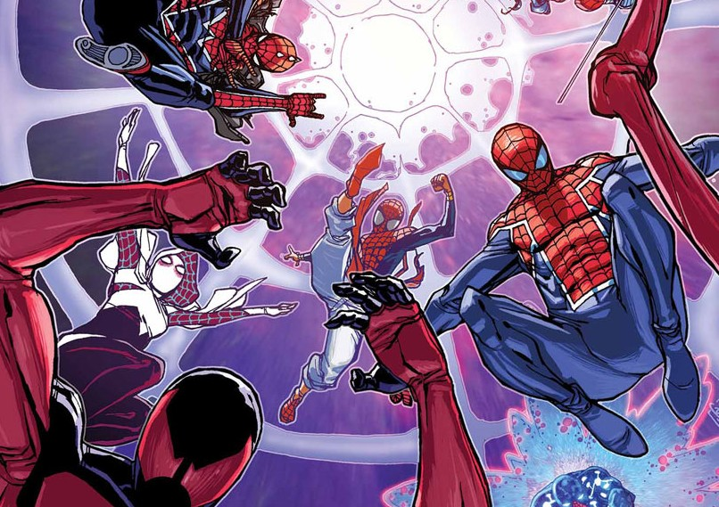

Les Web-Warriors
Le Spider-Verse est un concept illustrant l'idée que tous les personnages liés au Totem de l'Araignée
(Spider-Man, Spider-Woman, Miles Morales etc.) existent chacun dans leur propre univers, tout en étant connectés par la Toile de Vie et du Destin : ce sont les Web-Warriors
Cette toile est un réseau cosmique tissé par la déesse-araignée reliant tous les Spider-Héros.
Ce terme prend tout son ampleur avec l'événement Spider-Verse (2014-2015) écrit par Dan Slott.
Dans cette histoire, les Spider-Héros de tous les univers se rassemblent afin d'affronter les Héritiers, une famille de prédateurs vampiriques basés sur Terre-1 dont fait partie Morlun, qui se nourrissent de l'énergie vitale des porteurs du Totem Araignée.
Le terme Web-Warriors est donc utilisé pour représenter la communauté multiverselle des Spider-Héros, capable de se mobiliser en cas de menace cosmique.
Parmi les Spider-Totems les plus récurrents, on peut notamment retrouver :


 (Terre-616)/images/02ded11f488797fe81c715df359c7847.jpg)
 (Terre-616)/images/Peter_Parker_29_29_as_Scarlet_Spider.JPG.jpg)
 (Terre-616)/images/Julia_Carpenter_29_005.jpg)
 (Terre-616)/images/623aa35611b35c4765b13902f946f66a.jpg)
/images/STL108558.jpg)
/images/tn34nuh4vuq71.jpg)
/images/Spiderman2099.jpg)
/images/7c6781bdb3874476fa19c9643a0da268.jpg)
/images/Spider-Punk_Vol_1_1_Unknown_Comic_Books_Exclusive_Virgin_Variant.jpg)
/images/spider-man-noir-fan-casting-poster-336804-medium.jpg)
/images/Peter_Porker_Earth-7231_from_Ultimate_Civil_War_Spider-Ham_Vol_1_1_0002.jpg)
 (Terre-982)/images/7dc9ac83c43a28e63e04b60d6f09531d.jpg)
 (Terre-833)/images/SpiderUKOlivierCoipel0001.jpg)
/images/8062871-rco004_1626246221.jpg)
 (Terre-14512)/images/a7e20d483399b51304ee7f667f8c83c4.jpg)
/images/2de255817d3e78ca7ef6368102bbd222.jpg)
/images/abhishek-malsuni-spider-man-india-edge-of-spider-verse-003.jpg)
/images/vlx-zdor-spiderman-laststand.jpg)
/images/d3f575a77c323146338ff25b01fa2068.jpg)
 (Terre-807128)/images/79cf4328536554f1f6e8723854b53e2b.jpg)
/images/Spider-Man_1602_Vol_1_1_Textless.jpg)
/images/O9OxczO.jpeg)